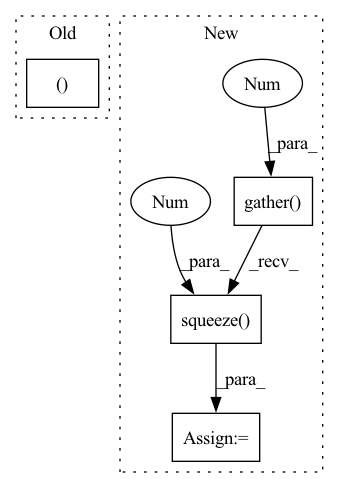

Pattern ID :34479

Before Change
c5 = u2[c2].float() < lb.unsqueeze(-1).float()
u3 = c5[u[:c5.shape[0]], indr_rev[c2]]
d[c2] = d[c2] * u3.float()
d[c2, indr[c2, lb2]] = alpha
return d * (w.abs() > 1e-8).float()
After Change
lb2 = lb.long()
if c2.any():
indr = indr[c2].gather(1, lb2.unsqueeze(1)).squeeze(1)
u = torch.arange(0, w.shape[0], device=device).unsqueeze(1)
u2 = torch.arange(0, w.shape[1], device=device, dtype=torch.float).unsqueeze(0)
alpha = -s[c2, lb2] / w[c2, indr]
c5 = u2 < lb.unsqueeze(-1)
In pattern: SUPERPATTERN
Frequency: 3
Non-data size: 4
Instances
Fragment ID: 99158568
Project Name: jeromerony/adversarial-library
Commit Name: 1f51f51770105e045bf985ab7553d5480efc4dbe
Time: 2020-11-26
Author: jerome.rony@gmail.com
File Name: adv_lib/attacks/fast_adaptive_boundary/projections.py
M Class Name: AnonimousClass
N Class Name: AnonimousClass
M Method Name: projection_l1(3)
N Method Name: projection_l1(3)
M Parent Class:
N Parent Class:
M File Name: adv_lib/attacks/fast_adaptive_boundary/projections.py
N File Name: adv_lib/attacks/fast_adaptive_boundary/projections.py
M Start Line: 235
M End Line: 273
N Start Line: 235
N End Line: 274
'>
Before Change
true_scores = score[i][loc_len[i] - 1].reshape(1, -1)
else:
true_scores = torch.cat(
(true_scores, score[i][loc_len[i] - 1].reshape(1, -1)), 0)
return true_scores
def predict(self, batch):
After Change
final_out_index = torch.tensor(origin_len) - 1
final_out_index = final_out_index.reshape(final_out_index.shape[0], 1, -1)
final_out_index = final_out_index.repeat(1, 1, 2*self.hidden_size).to(self.device)
out = torch.gather(out, 1, final_out_index).squeeze(1) // batch_size * (2*hidden_size)
out = self.dropout(out)
y = self.fc_final(out) // batch_size * loc_size
'>
Fragment ID: 99158563
Project Name: libcity/bigscity-libcity
Commit Name: ec61c9cd984d1c86ee715380ed3b65b4222c8d1f
Time: 2021-05-06
Author: 33283819+WenMellors@users.noreply.github.com
File Name: trafficdl/model/trajectory_loc_prediction/DeepMove.py
M Class Name: DeepMove
N Class Name: DeepMove
M Method Name: forward(2)
N Method Name: forward(2)
M Parent Class: AbstractModel
N Parent Class: AbstractModel
M File Name: trafficdl/model/trajectory_loc_prediction/DeepMove.py
N File Name: trafficdl/model/trajectory_loc_prediction/DeepMove.py
M Start Line: 122
M End Line: 175
N Start Line: 152
N End Line: 163
'>
Before Change
true_scores = score[i][loc_len[i] - 1].reshape(1, -1)
else:
true_scores = torch.cat(
(true_scores, score[i][loc_len[i] - 1].reshape(1, -1)), 0)
return true_scores
def predict(self, batch):
After Change
final_out_index = torch.tensor(origin_len) - 1
final_out_index = final_out_index.reshape(final_out_index.shape[0], 1, -1)
final_out_index = final_out_index.repeat(1, 1, self.hidden_size).to(self.device)
out = torch.gather(out, 1, final_out_index).squeeze(1) // batch_size * hidden_size
out = F.selu(out)
out = self.dropout(out)
y = self.fc(out)
score = F.log_softmax(y, dim=1) // calculate loss by NLLoss
return score
def predict(self, batch):
'>
Fragment ID: 99158564
Project Name: libcity/bigscity-libcity
Commit Name: ec61c9cd984d1c86ee715380ed3b65b4222c8d1f
Time: 2021-05-06
Author: 33283819+WenMellors@users.noreply.github.com
File Name: trafficdl/model/trajectory_loc_prediction/RNN.py
M Class Name: RNN
N Class Name: RNN
M Method Name: forward(2)
N Method Name: forward(2)
M Parent Class: AbstractModel
N Parent Class: AbstractModel
M File Name: trafficdl/model/trajectory_loc_prediction/RNN.py
N File Name: trafficdl/model/trajectory_loc_prediction/RNN.py
M Start Line: 87
M End Line: 97
N Start Line: 84
N End Line: 94